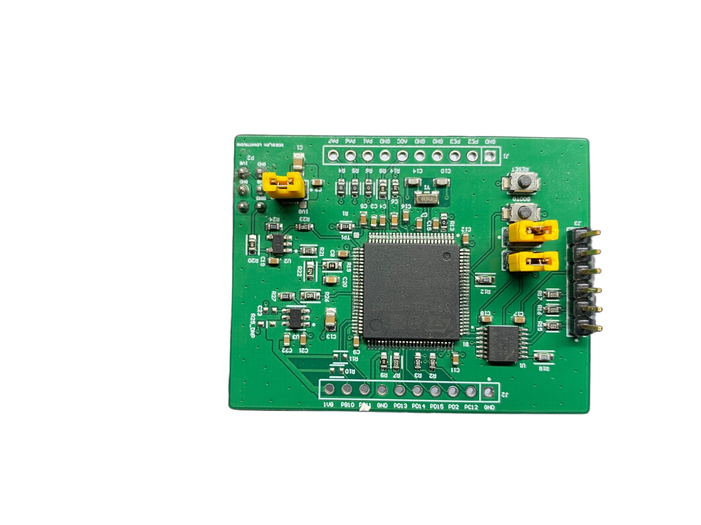
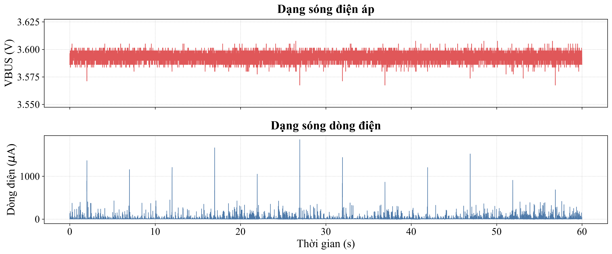

ACTUAL HARDWARE · STM32L4P501 /A modular, low-power STM32L4 platform
An STM32L4P5 extension with a separate 2-layer power board and 4-layer MCU board, designed from schematic through PCB layout in Altium.
- Designed both extension boards and carried out physical bring-up; the first fabricated revision operated successfully.
- Provided SPI, I2C, UART and SWD interfaces, a 1.8 V power domain and controlled sensor power.
- Documented the hardware with board photographs, layer drawings and STM32L4P5 voltage/current plots.
Design & measurement notes
The extension's hardware measurements are separate from my statistical analysis of the team's STM32L432 reference-board dataset. That analysis used permutation tests and Benjamini–Hochberg adjustment; it is not a Buck/LDO benchmark of this extension. The reference dataset remains private.

STM32L4P5 measurement example, 3.6 V condition. A waveform observation, not a claim of regulator efficiency or average energy savings.